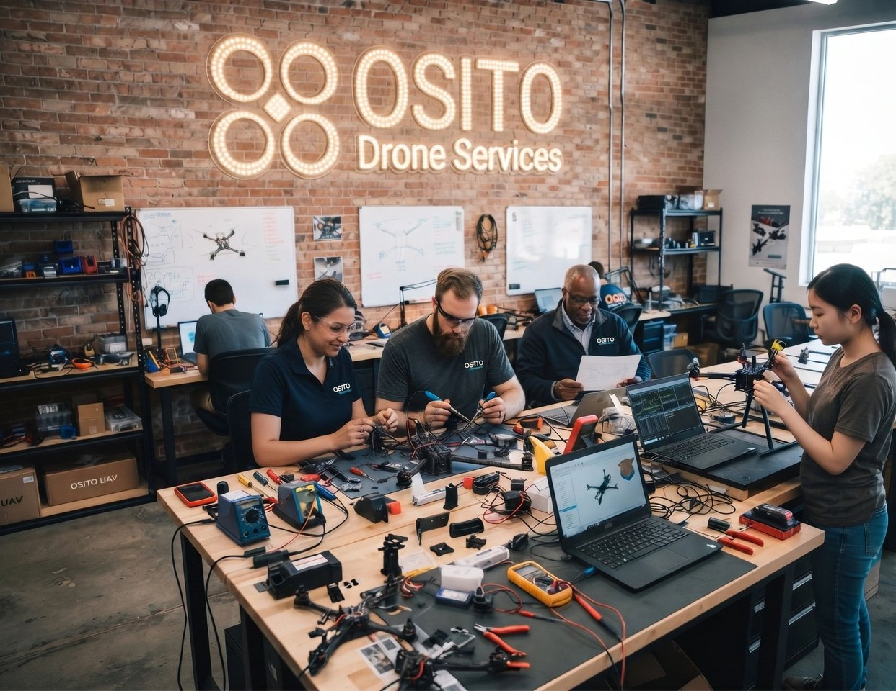
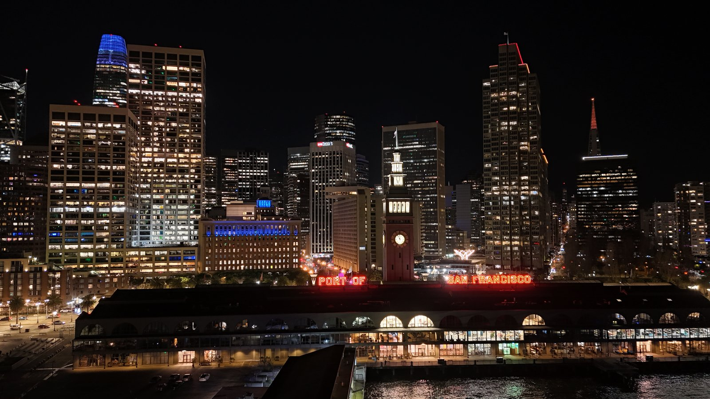
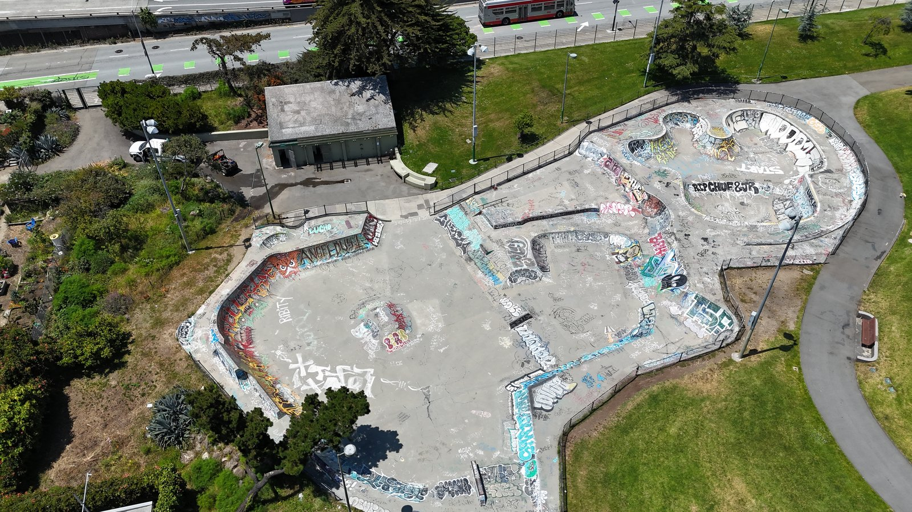
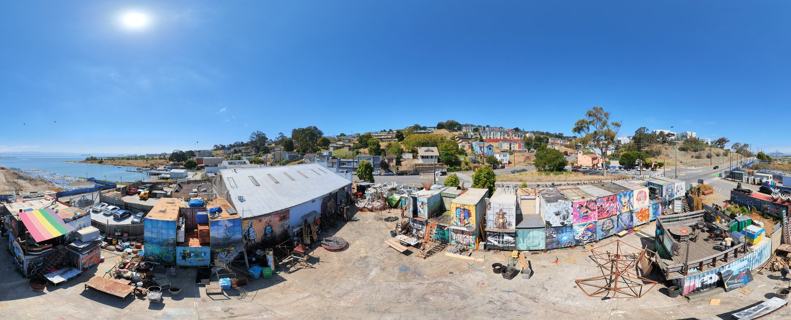
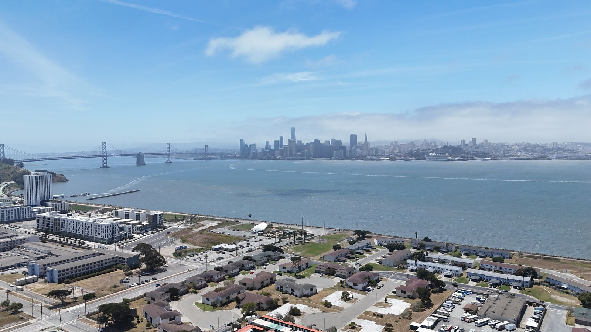
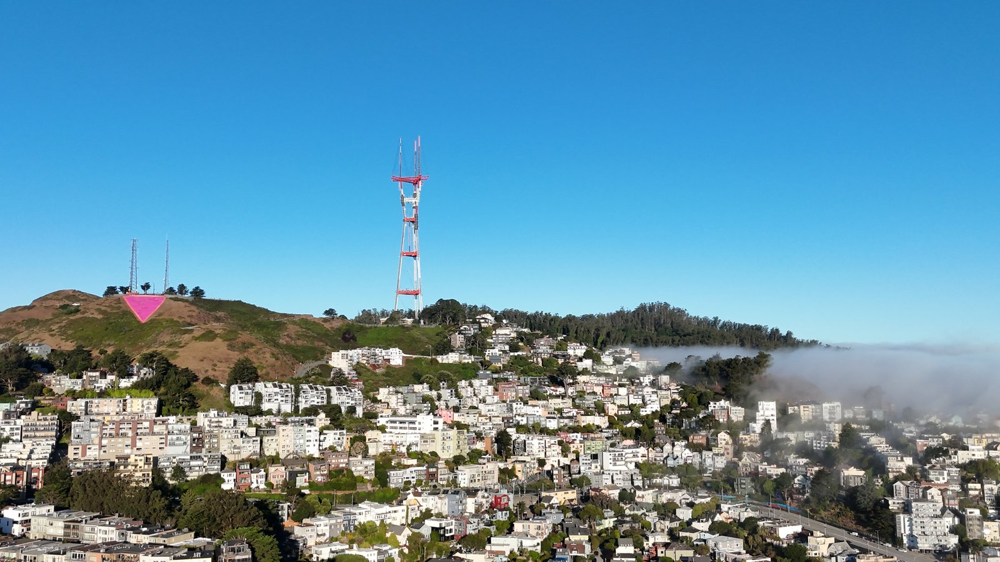
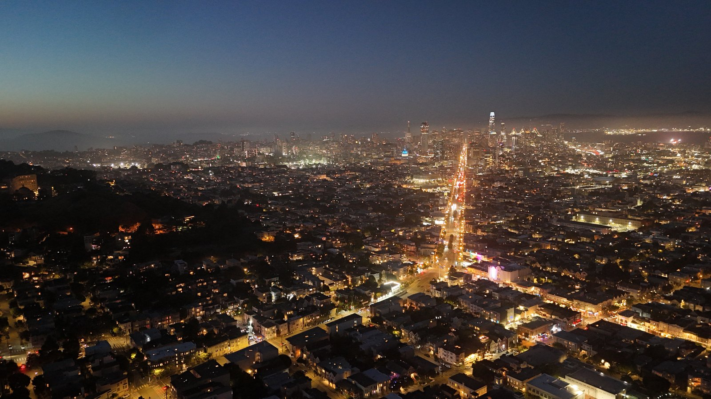

From complex industrial inspections and progress mapping to cinematic aerial cinematography and bespoke engineering payloads, Osito Drone Services delivers FAA Part 107 compliant, enterprise-grade aerial solutions across the San Francisco Bay Area.

Every mission is unique. Off-the-shelf drone packages rarely meet the rigorous demands of modern commercial, construction, or technical operations. At Osito Drone Services, we combine advanced hardware configuration, expert flight planning, and rigorous safety protocols to build aerial workflows designed around your exact objectives.
Beat Bay Area commercial drone minimums ($395-$750) by 25% to 60% with 24-hour turnaround on 4K roof, thermal, orthomosaic, and real estate flights.
Keep stakeholders informed and projects on schedule with millimeter-accurate aerial intelligence.
Showcase properties and spaces from breathtaking, perspective-shifting angles.
Reduce downtime and eliminate worker safety risks with close-up aerial assessments.
Have a unique operational challenge? We engineer custom solutions.
Captured directly by the Osito Drone Services flight crew across San Francisco, Treasure Island, Twin Peaks, and the Hunters Point waterfront:

Low-noise night aerial capture of the illuminated Ferry Building clock tower and Financial District.

Vertical 90-degree photogrammetry and surface inspection of San Francisco skatepark bowls.

Ultra-high-resolution 120-megapixel panoramic inspection of San Francisco industrial arts yards.

Wide-horizon infrastructure and development progress view across the Bay Bridge to Downtown SF.

High-clarity daytime aerial over Twin Peaks and San Francisco hillside neighborhoods.

High-altitude night flight documenting municipal lighting corridors and downtown visibility.
At Osito Drone Services, safety isn't an afterthought - it's our operational baseline. Every flight follows a strict protocol:
Whether you need a one-time promotional shoot or a recurring infrastructure mapping contract, Osito Drone Services is ready to deliver precision from above.